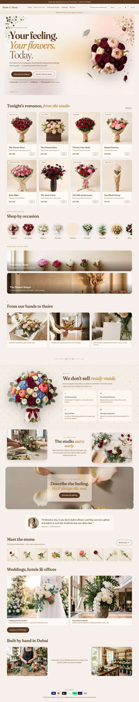
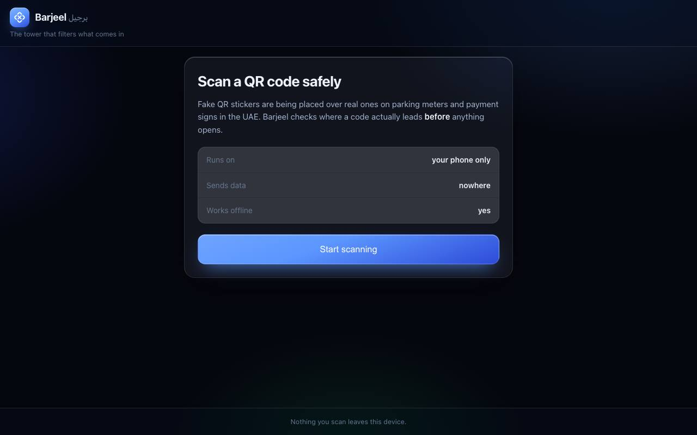
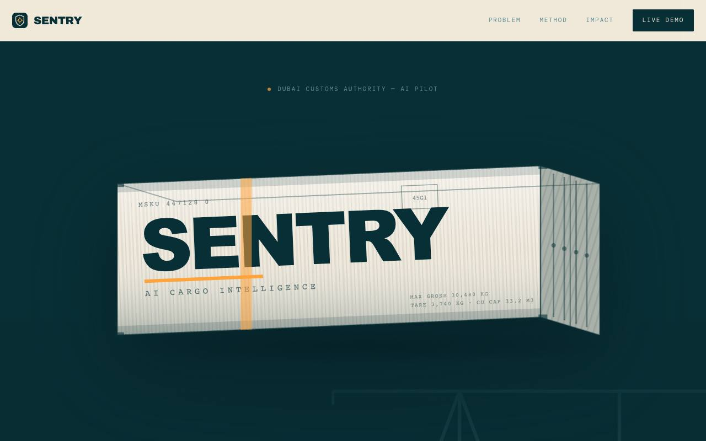

Every site I have built for the web, running on this page. Load one and it is the real thing, not a video or a mockup: click through it, scroll it, and switch it between desktop, tablet and phone while it runs. Two of them send a header that forbids being framed, so those show the whole page as a capture you can scroll instead.
Private yacht charters in Dubai. The public site quotes one price with no deposit until you say yes. Behind it: an admin dashboard with a content editor, a chat assistant that answers from a knowledge base, and enquiry, messaging and visit-tracking APIs on Supabase.
A salon booking system built end to end. A customer books online, the booking lands in Supabase, a confirmation goes out by email and straight to the owner's WhatsApp, and the owner signs in to an admin page to move, cancel or complete every appointment.
Why this one is a picture. Muneera Beauty Center sends X-Frame-Options, so it refuses to run inside another page — the same header that stops anyone else framing it. Scroll the capture here, or open the real site.
A flower shop delivering across all seven emirates. Describe a feeling and it designs the bouquet for you, or build one stem by stem. Cart and Stripe checkout, customer sign-in, an admin page, English and Arabic, light and dark.
Stripe checkoutAI bouquet builderArabic + EnglishLight + dark
stem-by-stem.vercel.appFull page · scroll

Why this one is a picture. Stem by Stem sends X-Frame-Options, so it refuses to run inside another page — the same header that stops anyone else framing it. Scroll the capture here, or open the real site.
An offline QR scam scanner. Point it at a code and it tells you where that code actually leads before anything opens: lookalike domains, punycode, subdomain tricks. It never opens a link for you and nothing leaves the device.
20 checks81 testsFully offlineNever opens links
ebinraj2007-cmd.github.io/barjeelLive

Runs the real site, right here
This one would not load inside the page. It is still up — open it in its own tab.
Cargo risk scoring for customs. Fuses scanner imagery, declaration data and watchlists into a single 0 to 100 score per shipment, with the reason for every flag. Built at the Dubai Customs and University of Dubai hackathon.
0–100 risk score2.3s per shipmentExplains every flag
ebinraj2007-cmd.github.io/sentryLive

Runs the real site, right here
This one would not load inside the page. It is still up — open it in its own tab.
Before these: a 100-product WooCommerce store I built end to end for Best Pick Mart in Dubai, from 2024 to 2025 — storefront, payment gateway and on-page SEO, alongside running the shop. It is no longer online to link.